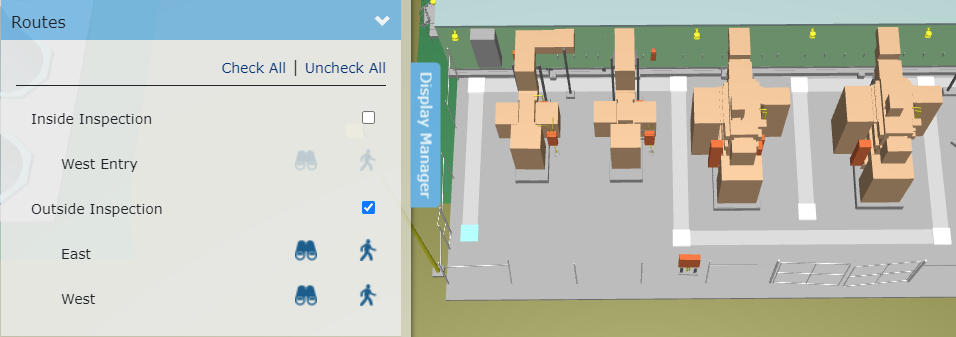

ディスプレイマネージャー
Knowledge Book表示マネージャーを使用すると、ビューアに表示される内容を管理できます。ディスプレイマネージャーは、Knowledge Bookビューアの左側にある「ディスプレイマネージャー」タブをクリックすると表示されます。ディスプレイマネージャーを非表示にするには、「ディスプレイマネージャー」タブを再度クリックします。

カラーオーバーレイ
ナレッジビュー内のアセットは、アセットリストに編成できます。アセットは0 個以上のアセットリストに属することができます。アセットリストには色があります。 [カラー オーバーレイ]エキスパンダーをクリックして、アセットリストの色のオン/オフを切り替えます。アセットリストのカラーをオンにすると、アセットのネイティブ カラーがオーバーライドされます。複数のアセットリストに属するアセットは、優先度の高いアセットリストの色で表示されます。各ナレッジビューには、デフォルトで常に「ビューア内のすべてのアセット」リストが含まれます。このデフォルトのリストの色を変更できます。アセットリストの色は変更できません。アセットリストの優先順位は変更できません。

アセットリストの色をオフにすると、そのアセットがネイティブ (固有) カラーで表示されます。

| V-Suite CORE ナレッジビューがアクティブ化された表示フィルターは変換され、 V-Suiteアセットリストに転送されます。 |

表示レイヤー
マークされたポイントのタグとラベルは、ビューアの 2D キャンバス上に描画されます。 [表示レイヤー] エキスパンダーをクリックして、2D キャンバス レイヤーを表示または非表示にします。

ナレッジビューにスキャンが含まれている場合、表示マネージャーには 3D ビューアでスキャンを表示または非表示にするセクションが含まれます。


ルート
ナレッジビューに含まれるルートはすべて、表示マネージャーの[ルート]セクションにリストされます。ルート リストを使用すると、3D ビューア内で個々のルートを表示または非表示にすることができます。

いずれかのルートの横にあるチェックボックスを選択すると、ビューア内にルートの 3D 表現が表示されます。
ルートを選択してビューアに表示すると、ルート コマンドを利用できるようになります。


「すべてチェック」を使用する 利用可能なすべてのルートをビューアに表示するためのリンク。すべてのルートを非表示にするには、「すべてのチェックを外す」をクリックします。